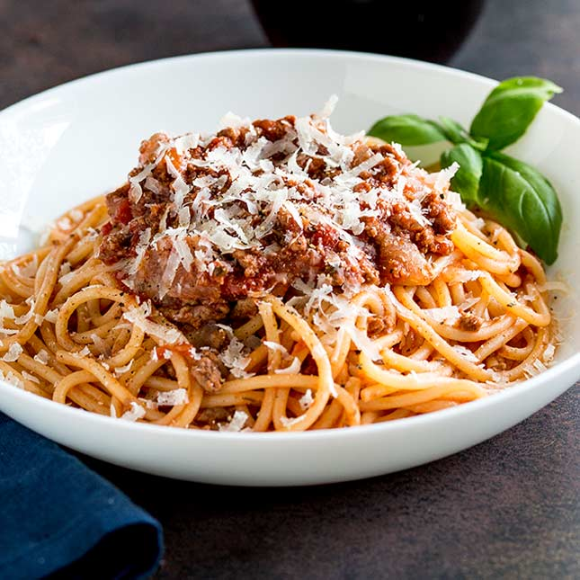

Spaghetti

Description
Oh, spaghetti. The ultimate comfort food. A dish that is at least top 5 in the meal playlist of my childhood. My ma would cook spaghetti at least 2-3 times a month growing up because of its leftover potential (very important with a pre-teen daughter and a teenage son) and ease of preparation. Topped with some Kraft parmesan cheese? Oh, man. The nostalgia!
Now let me say this. I love my ma to pieces. However, now that I'm an adult, I can admit that I've had better spaghetti. I've made better spaghetti. And I've also evolved from the flavored cellulose powder I used to call parmesan cheese. After days of scouring the web for the best spaghetti recipe, I stumbled across one that is so good, I'd put it up against any Italian mother's! So without further adieu, check out this amazing recipe for the world's best spaghetti. You'll never want another!
Ingredients
- 1 lb ground turkey
- Half of a large onion, diced
- 4 garlic cloves, minced
- 1/2 tbsp olive oil
- 1/2 tsp fennel seed
- 1 tbsp Italian seasoning
- 15 oz canned diced tomatoes
- 6 oz tomato paste
- 15 oz canned tomato sauce
- 8 oz water
- 1.5 tsp dried basil
- 1 tsp dried parsley flakes
- 2 tbsp brown sugar
- 1/2 tsp crushed red pepper flakes
- 1 tsp black pepper
- 1 tsp salt
- 1/8 cup dry red wine
- 1/4 lb spaghetti
- Parmesan cheese, grated (fresh or packaged, as long as it does not contain cellulose)
Directions
- Preheat a large, heavy stockpot.
- Add olive oil and onions. Sweat the onions for 5 minutes.
- Add ground turkey, garlic, fennel seed, and Italian seasoning, then continue to cook until the meat is browned, breaking up the meat as you stir.
- Add diced tomatoes, tomato paste, tomato sauce, and water.
- Add basil, parsley, brown sugar, salt, crushed red pepper, and black pepper.
- Stir well and barely bring to a boil.
- Stir in red wine.
- Simmer on low, stirring frequently for at least 30 minutes. A longer simmer makes for a better sauce, just be careful not to let it burn!
- Cook spaghetti according to package directions. Don't forget to salt your pasta water!
- Spoon sauce over drained spaghetti noodles and sprinkle with parmesan cheese.
Thank you to Food. for providing the base for this delicious recipe.